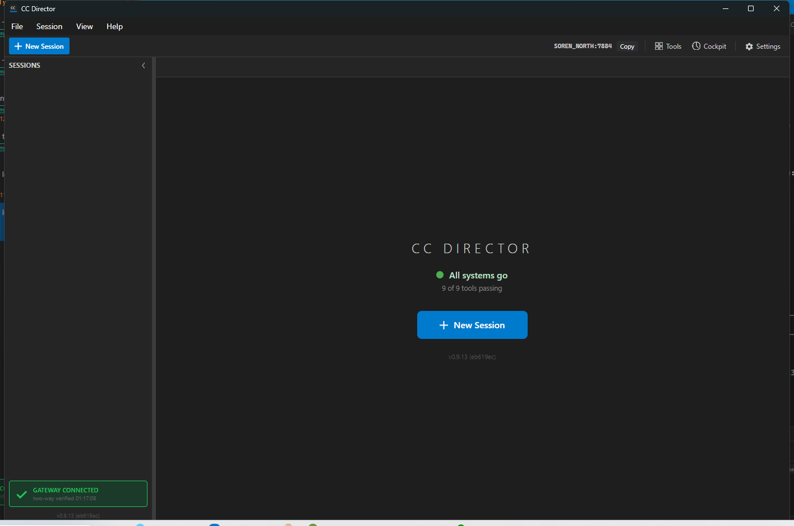

dotnet build cc-director.sln: 0 warnings, 0 errors).
Full CcDirector.Core.Tests (2149 passed) and CcDirector.Gateway.Tests (839 passed) green.
Proven both by unit/integration tests that boot a real Kestrel ingest host and against the running Director (slot 13, Control API on port 7884).
Whole-audio capture is now an enforced gate, not best effort. Before any transcription, the
server verifies that the stored audio matches the manifest exactly: every declared segment index is
present and contiguous, each stored segment's SHA256 matches the manifest, and each segment's byte
count matches (so the total matches). Only an all-pass advances to transcription. Anything short of
that is refused as incomplete, naming the exact indices to re-send, and is never
transcribed. An empty capture fails loud. The desktop dictation "recover whatever arrived and
transcribe it" truncation path was removed entirely.
| Area | Change |
|---|---|
CcDirector.Core/Recording/RecordingIngestService.cs |
New VerifyAudioCompleteness gate + new incomplete state. CompleteAsync runs the gate: empty capture throws loud; missing/SHA/byte-total failure sets state incomplete with MissingOrBadIndices and does NOT queue; all-pass queues. ProcessRecordingAsync refuses to transcribe an incomplete recording (defense in depth). |
CcDirector.Gateway.Contracts/RecordingManifest.cs |
RecordingStatusDto gains MissingOrBadIndices - the incomplete response shape naming the segments to re-send. |
CcDirector.Gateway/Api/RecordingEndpoints.cs |
POST .../complete returns 409 Conflict for an incomplete upload (never 202), 400 with a named error for an empty capture, and 202 only for an all-pass. |
CcDirector.Core/Voice/VoiceUtteranceService.cs |
Empty capture now fails loud; a missing OR zero-byte segment returns incomplete naming the indices (no partial transcription). |
CcDirector.ControlApi/DictationEndpoint.cs |
Removed MinRecoverableAudioBytes / TryRecoverOrDiscard and the recover-and-park path. Only an explicit stop frame finalizes/transcribes; an early or dropped connection sends a typed error and discards its partial audio. |
CcDirector.ControlApi/RecoveredDictationStore.cs (deleted), Web/session-view.html |
The server-side parked-transcript store and the /dictate/recovered pickup endpoints + browser banner/JS were removed. |
docs/cencon/architecture_manifest.yaml |
Updated the descriptions of RecordingIngestService, VoiceUtteranceService, and DictationEndpoint to document the gate. |
| Criterion | How it is met | Verification |
|---|---|---|
| 1. Incomplete upload (missing index / bad SHA / wrong byte total) refused with an "incomplete" response naming the indices; no transcription. | Gate returns incomplete + MissingOrBadIndices; not queued; ProcessRecordingAsync short-circuits. |
PASS - RecordingCompletenessGateHttpTests.Complete_MissingSegment_Returns409_Incomplete_NamingMissingIndex (real Kestrel: 409, indices=[1], /transcript 404); Core unit tests for missing / SHA-mismatch / byte-mismatch. |
| 2. Complete upload (all present, hashes match, bytes total) advances to transcription. | All-pass gate sets state queued; worker transcribes. |
PASS - RecordingIngestServiceTests.Complete_AllSegmentsPresentAndIntact_AdvancesToTranscription (queued then transcribed, transcript present). |
| 3. Client retries complete until acknowledged; a recording interrupted between capture and ack resumes with zero audio loss. | Re-send only the missing index, then complete again passes the gate. Storage is idempotent (SHA256), state survives on disk, complete is idempotent. | PASS - RecordingIngestServiceTests.Complete_ResendMissingSegment_ThenPasses_AndTranscribes (first complete = incomplete[1]; re-send 1; second complete = queued -> transcribed). |
| 4. Desktop "recover whatever arrived" truncation path removed; early/dropped connection yields re-send or explicit failure, never a partial transcript. | MinRecoverableAudioBytes/TryRecoverOrDiscard/recover-and-park all deleted; drop sends a typed error and discards. |
PASS - DictationEndpointTests.ClientCloseWithoutStop_discards_partial_audio_and_never_transcribes (drop -> "partial audio discarded (not transcribed)", no transcript, /dictate/recovered 404). Live: see runtime probe below. |
| 5. Empty capture fails loud with a named error; never an empty transcript. | Zero-segment manifest throws InvalidOperationException("...empty capture..."); endpoint returns 400 with the message; voice path throws too. |
PASS - RecordingCompletenessGateHttpTests.Complete_EmptyCapture_Returns400_NamedError (real Kestrel: 400, "empty capture"); VoiceUtteranceServiceGateTests.Complete_EmptyCapture_FailsLoud. |
The dictation endpoint is still served, but the removed recover-and-park pickup endpoints now 404, proving partial audio is never parked or transcribed:
GET /dictate.html -> HTTP 200 (dictation endpoint still present) GET /dictate/recovered -> HTTP 404 (recover-and-park pickup removed) POST /dictate/recovered/x/dismiss -> HTTP 404 (dismiss removed)
Full capture: live-runtime-proof.txt.
Passed RecordingCompletenessGateHttpTests.Complete_EmptyCapture_Returns400_NamedError [171 ms] Passed RecordingCompletenessGateHttpTests.Complete_MissingSegment_Returns409_Incomplete_NamingMissingIndex [51 ms] Passed DictationEndpointTests.ClientCloseWithoutStop_discards_partial_audio_and_never_transcribes [4 s] Test Run Successful. Total tests: 3 Passed: 3
Full capture: live-gate-tests-proof.txt.

Security posture: unchanged - no new external surface, no new secrets, no auth change. The gate is a
read-only integrity check (SHA256 + byte count + contiguity) before transcription. Architecture: the
component descriptions for RecordingIngestService, VoiceUtteranceService, and
DictationEndpoint in architecture_manifest.yaml were updated to document the
gate and the removal of the recover-truncated-stream path. No blocking security rule (DT-*) is affected.